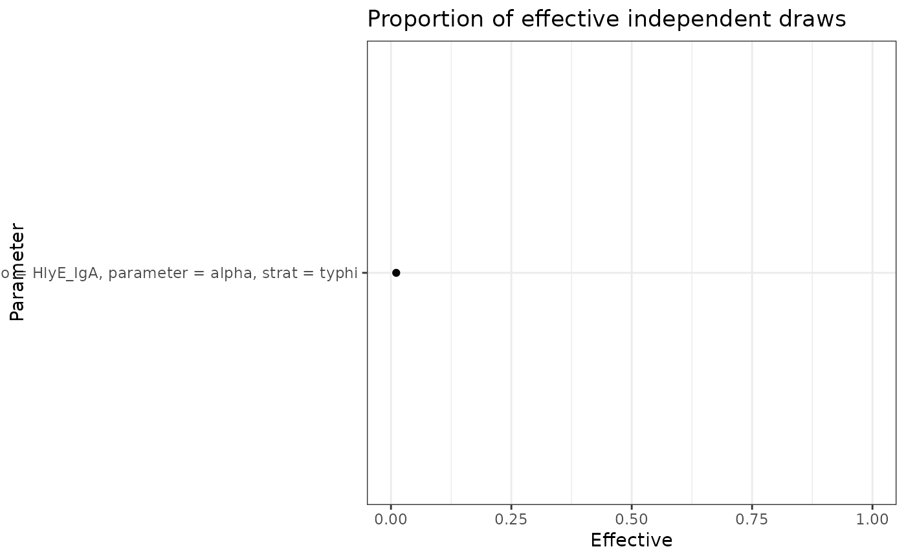

plot_jags_effect() takes a list output from run_mod()
to create summary diagnostics for each chain run in the mcmc estimation.
Defaults will produce every combination of antigen/antibody, parameters,
and stratifications, unless otherwise specified. At least 2 chains are
required to run function.
Antigen/antibody combinations and stratifications will vary by analysis.
The antibody dynamic curve includes the following parameters:
y0 = baseline antibody concentration
y1 = peak antibody concentration
t1 = time to peak
r = shape parameter
alpha = decay rate
Arguments
- data
A list outputted from run_mod().
- iso
Specify character string to produce plots of only a specific antigen/antibody combination, entered with quotes. Default outputs all antigen/antibody combinations.
- param
Specify character string to produce plots of only a specific parameter, entered with quotes. Options include:
alpha= posterior estimate of decay rater= posterior estimate of shape parametert1= posterior estimate of time to peaky0= posterior estimate of baseline antibody concentrationy1= posterior estimate of peak antibody concentration
- strat
Specify character string to produce plots of specific stratification entered in quotes.
Value
A list of ggplot2::ggplot objects showing the proportion of effective samples taken/total samples taken for all parameter iso combinations. The estimate with the highest proportion of effective samples taken will be listed first.
Examples
if (!is.element(runjags::findjags(), c("", NULL))) {
data <- serodynamics::nepal_sees_jags_post
plot_jags_effect(
data = data,
iso = "HlyE_IgA",
param = "alpha",
strat = "typhi")
}
#> $typhi
#> $typhi$HlyE_IgA

#>
#>